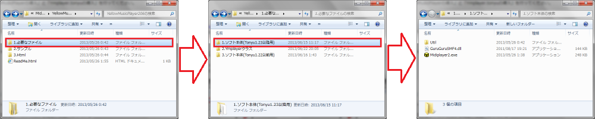
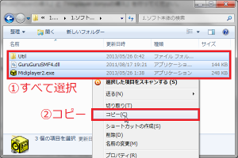
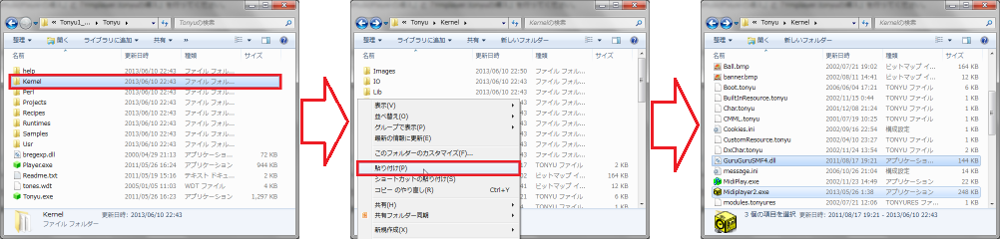
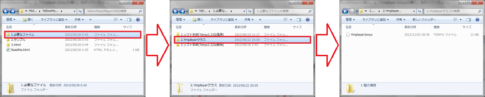
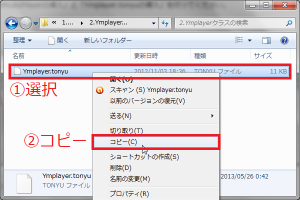
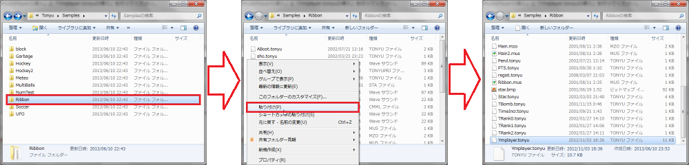
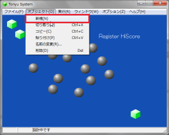
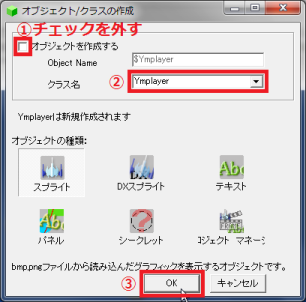

導入方法
導入方法
Midiの再生・停止だけ使う場合は「YellowMusicPlayerの導入」のみ行ってください。
YellowMusicPlayer独自の機能を使う場合は「YellowMusicPlayerの導入」と「Ymplayer.tonyuの導入」を行ってください。
Tonyuのバージョンによって導入するファイルが異なります。間違えないように気を付けてください。
YellowMusicPlayerの導入
- 「1.必要なファイル」→「1.ソフト本体(Tonyu1.23以降用)」フォルダを開く
※ Tonyu 1.22以前に導入する場合は「3.ソフト本体(Tonyu1.22以前用)」フォルダを開く

- ３つの項目があるので、すべてを選択してコピーする

- YellowMusicPlayerを導入したいTonyuランタイム版または開発環境版のKernelフォルダを開き、そこへ貼り付ける
（上書き・統合はすべて「はい」）

「MidiPlayer2.exe」のアイコンが黄色に変わればＯＫ
Tonyu 1.22以前では「MidiPlay.exe」のアイコンが黄色に変わればＯＫ
※ 右クリックする場合、フォルダを選択した状態で貼り付けしないように注意！（選択したフォルダ内に貼り付けされてしまいます）
Ymplayer.tonyuの導入
- 「1.必要なファイル」→「2.Ymplayerクラス」フォルダを開く

- 「Ymplayer.tonyu」ファイルがあるのでコピーする

- YellowMusicPlayerの機能を使いたいゲームプロジェクトのフォルダを開き、そこへ貼り付ける

※ 画像はTonyuのサンプル「Ribbon」に導入する例です
- 先ほどのゲームプロジェクトをTonyuの開発環境版で開く
- 「オブジェクト」→「新規」を開く

- 「オブジェクトを作成する」のチェックをはずし、クラス名の欄に「Ymplayer」と打ち込み、OKを押す

あとは、プログラム内でYmplayerクラスのオブジェクトを生成し、
そのオブジェクトからメソッドを使えば、YellowMusicPlayerの機能を使うことができます。
オブジェクトを生成する際、「$mplayer = new Ymplayer();」とすると、
今まで$mplayerを使っていたプログラムも改変せずにそのまま使えるので便利です。
戻る